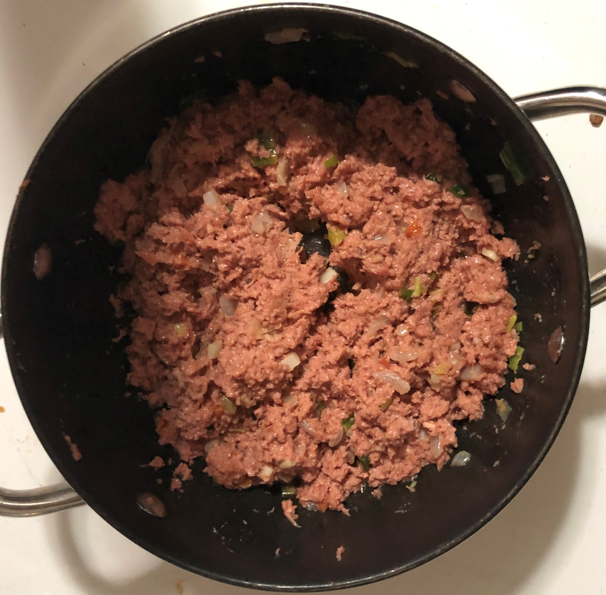

Authentic Jamaican Cooking
Shanika's Cusine
Corn Beef done the Jamaican way, is a favoured dish in the island because of its simplicity and minimal preparation time. This meal can be prepared for lunch or dinner. Many people have their own take on the recipe and will add extra ingredients accordingly. None-the-less, the recipe provided below will teach the basics of how to prepare this dish.
Ingredients List
Read through throughly
- 1 Tin of Corn Beef
- 1/2 Tin of Mixed Carrots and Peas
- 1/2 Tin of Sweet Corn
- 1 tsp Black Pepper
- 3 tbs Ketchup
- 1/4 cup of Oil
- 1 small Tomato
- 1/4 of a big Onion
- 3 stalks Green Onion
- 3 cloves Garlic
Directions
Get your tomato, onion, green onion, garlic cloves and wash them properly before choping them up into small pieces. Your end result should look like the picture on the right.
Choose your favourite frying pan to add the oil to. Turn the stove on medium heat and wait from for 2 -3 minutes until the oil is heated enough. In order to make sure that the oil's temperature is just right, put a piece of the diced vegtables in the oil. If the oil bubbles and makes popping noise after this is done, then the oil is ready. Toss all chopped up vegtables in the oil and stur until they are fully cooked.
Open the Corn Beef with the provided can opener. Put the beef in the pot and crush it up with a wooden spoon. Cover the pot with a lid and leave it to simmer for 5 - 8 minutes.
Add the sweet corn, carrots, peas, black pepper and ketchup to the Corn Beef. Stur mixture and add additional seasiongs if needed for extra flavouring. Eg. Maggi All Purpose or Red Pepper Flakes are some of the optional choices.
Heat up the Corn Beef on low heat. Serve with desired side/s.